Three lessons, four live labs, an energy-grid game and a shuffled practice exam. Revise the whole of Exam 2: energy and you, fuels, and renewable resources.
Where your energy comes from, where it goes, and why it is never used up.
The four energy types your body uses: tap a card to flip it
Name that energy
Energy from food
Food
Main energy store
Used for
Banana
Chemical
Movement and warmth
Bread
Chemical (carbohydrates)
Brain and muscle energy
Chocolate
Chemical (sugar + fat)
Quick-release energy
Water
None: not a fuel
Keeps the body hydrated
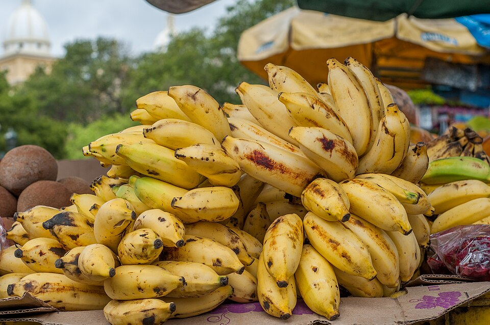
Banana: chemical energy for movement and warmth.
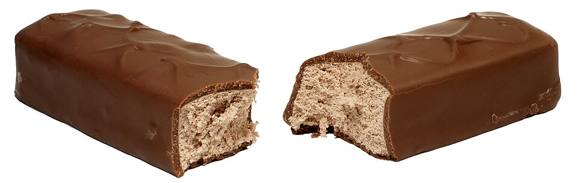
Chocolate: sugar and fat, digested quickly.
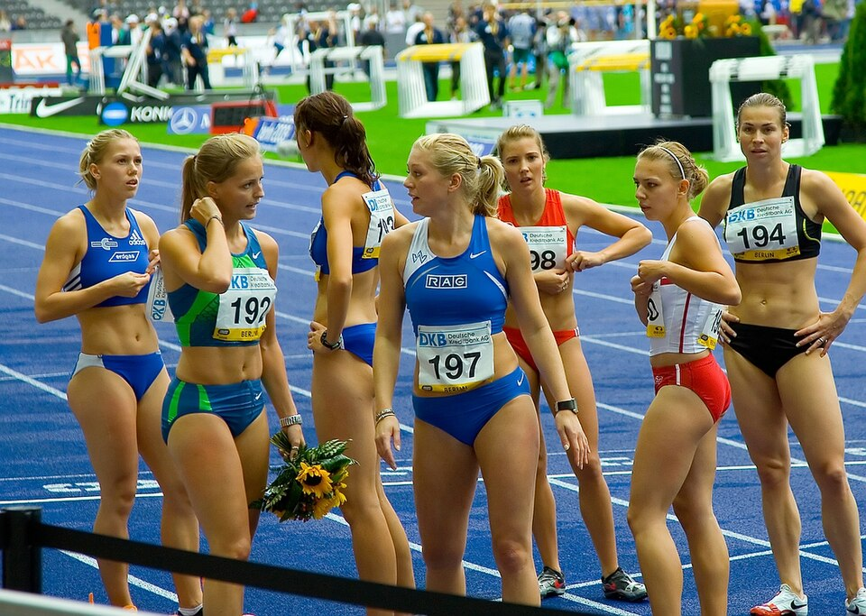
Athletes: chemical energy becomes movement and heat.
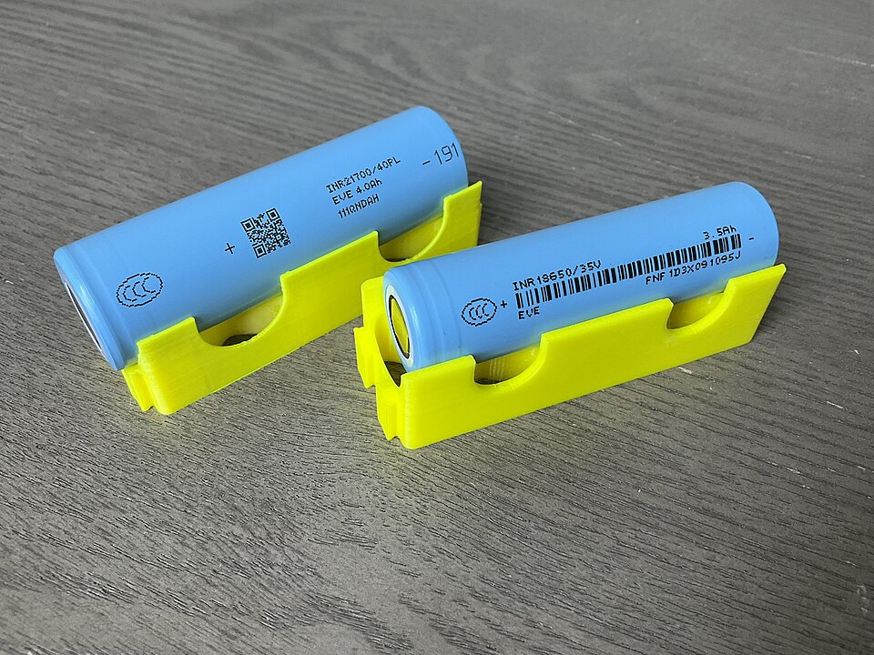
Batteries also store chemical energy.
Why isn't water an energy store? It has no calories. It supports body functions but is not a fuel.
Match the food to its job
Where does the energy go when you run? Put the chain in order
The transfer is not 100% efficient: some energy always leaves as heat. Energy you do not use can be stored as fat. Play with it in the Body Energy Lab.
Build a full-mark answer
10-mark answer builder
“Discuss the energy transformations after eating food. Include chemical energy and explain how this supports daily activities and body regulation.”
Tap every statement you would put in a full-mark answer, then check.
8
Fuels
Stored chemical energy that is released as heat when burned.
Fuel
A fuel stores energy and releases it as heat (and light) when burned. Burning a fuel is called combustion.
Fossil fuels: coal, oil, natural gas.
Why it matters
Combustion also releases carbon dioxide (CO₂), which traps heat and contributes to climate change, plus smoke and pollutants. Over 80% of the world's energy still comes from fossil fuels.
How were fossil fuels formed?
Fuel
Made from
Formed over
Coal
Ancient plants
Millions of years (land)
Oil
Ancient sea creatures
Millions of years (marine)
Natural gas
Sea creatures + pressure
Same as oil, deeper underground
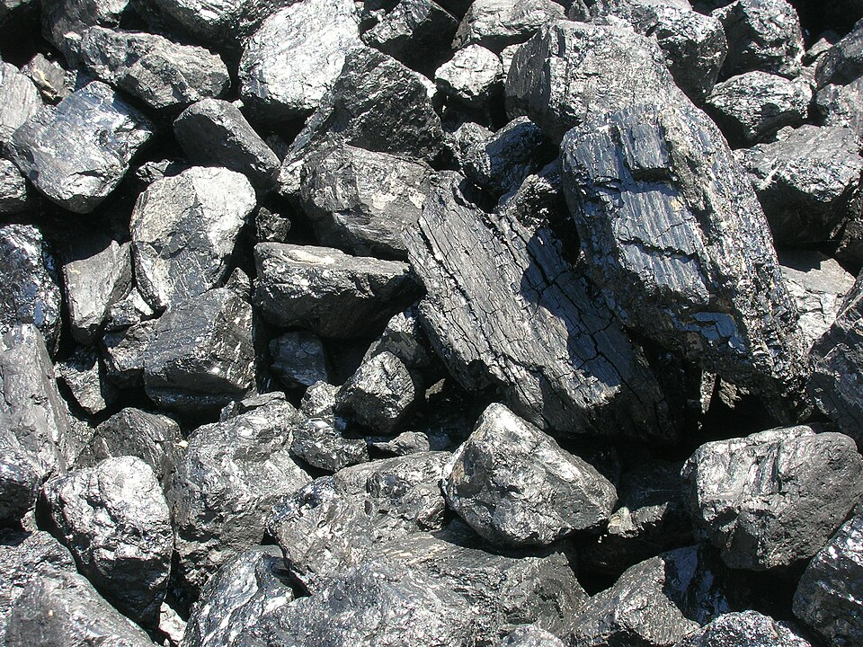
Coal: from ancient land plants.
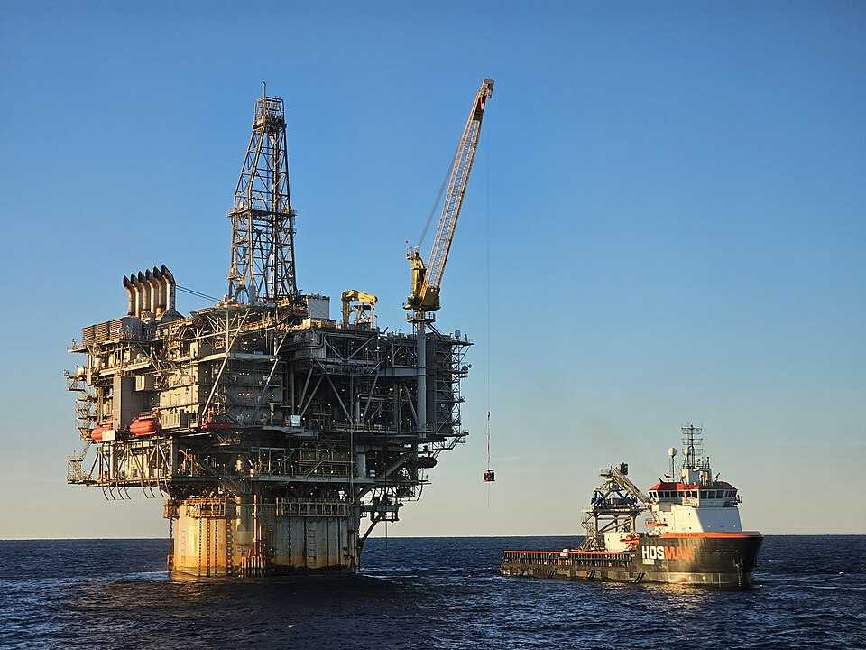
Oil: from ancient sea creatures, pumped up from under the sea.
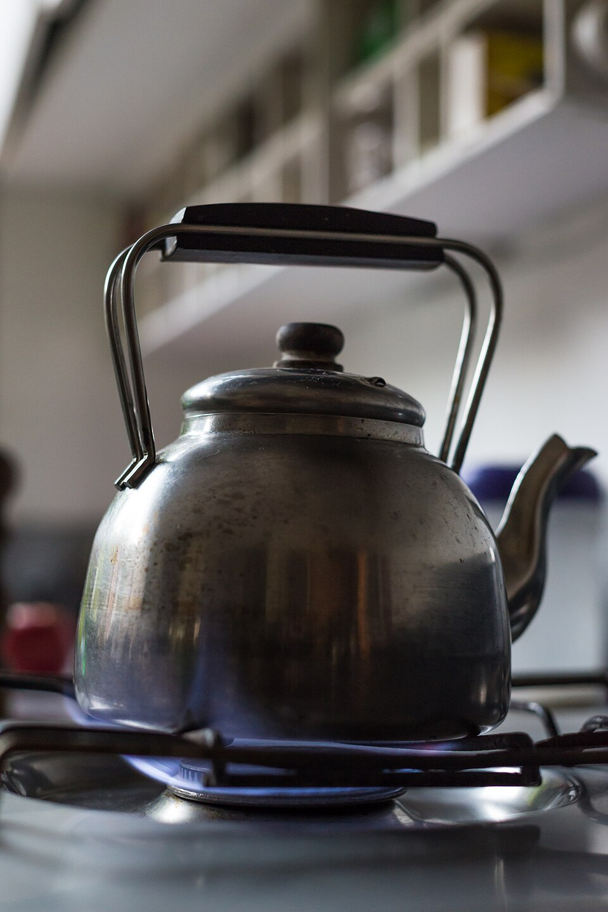
Natural gas: burned on a hob to heat a kettle.
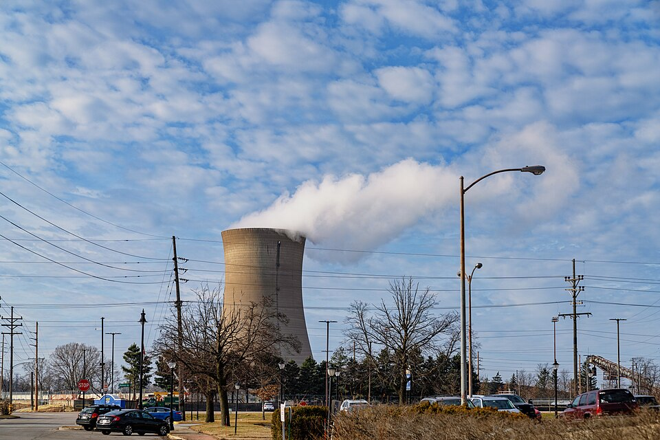
Power station: burns fuel to make electricity.
They are non-renewable: they take millions of years to form and cannot be replaced quickly once used. Watch it happen in the Fossil Fuel Time Machine.
Match the fuel to what it came from
Fossil fuel or not?
How fuels make electricity: put the steps in order
Fossil fuels, biomass and nuclear can all heat water this way. Try each one in the Power Station Lab.
Build a full-mark answer
4-mark answer builder
“Explain how burning fossil fuels contributes to climate change and why they are non-renewable.”
Tap every statement you would put in a full-mark answer, then check.
9
Renewable Resources
Energy that is replaced naturally and will not run out.
Source
How it works
Advantage
Disadvantage
Solar
Panels turn sunlight into electricity
Free energy from sunlight
Does not work well in cloud or at night
Wind
Wind turns turbines
No pollution
Needs windy weather
Hydroelectric
Moving water drives generators
Reliable and powerful
Dams can flood habitats
Biomass
Plants and waste are burned or used as fuel
Uses waste or crops
Still releases some CO₂
Geothermal
Heat from inside the Earth makes steam
Works all the time
Only works in certain places
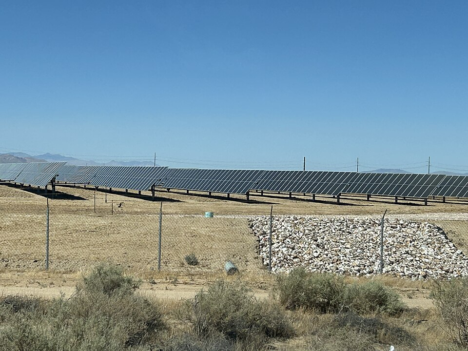
Solar: panels turn sunlight into electricity.
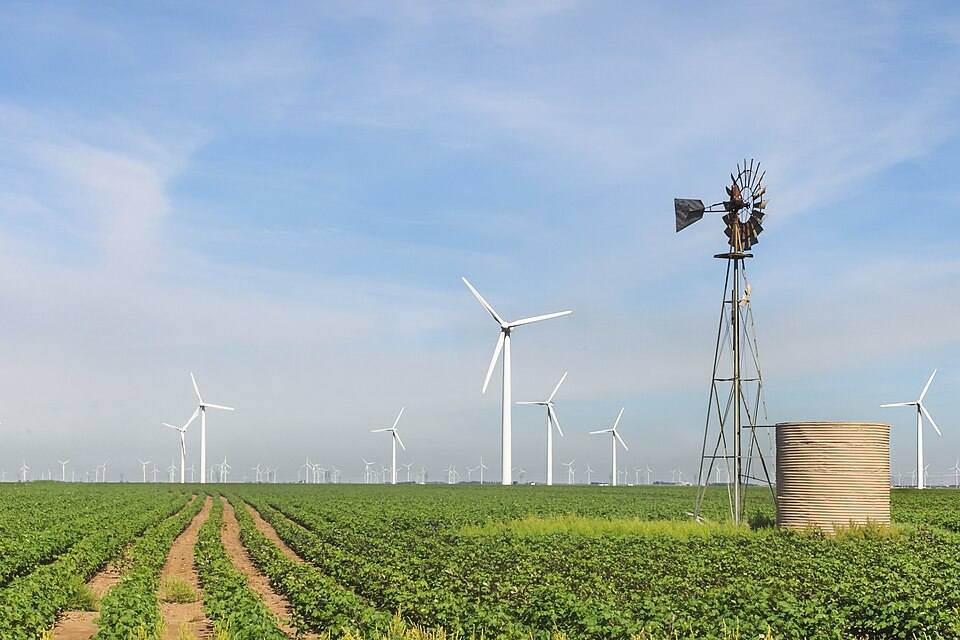
Wind: turbines turn the wind into electricity.Hydroelectric: moving water drives the generators.
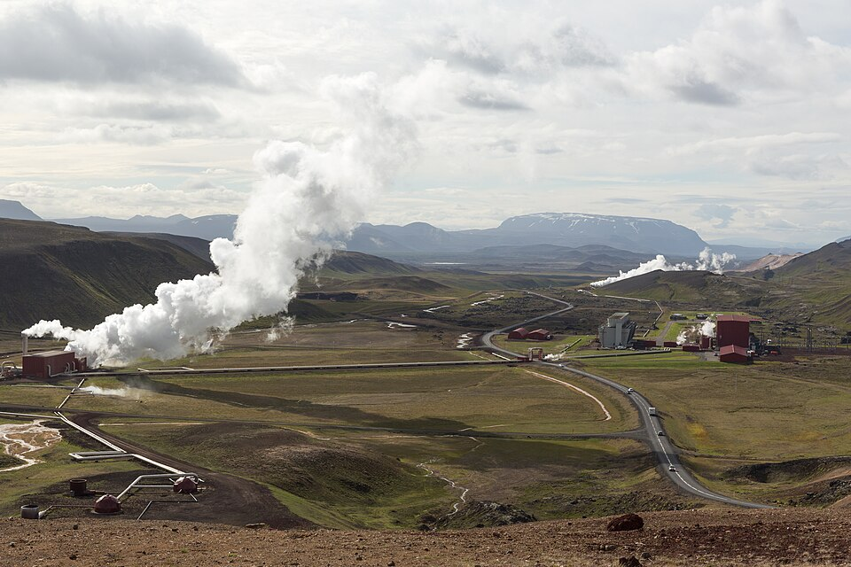
Geothermal: Earth's heat makes steam all day and night.
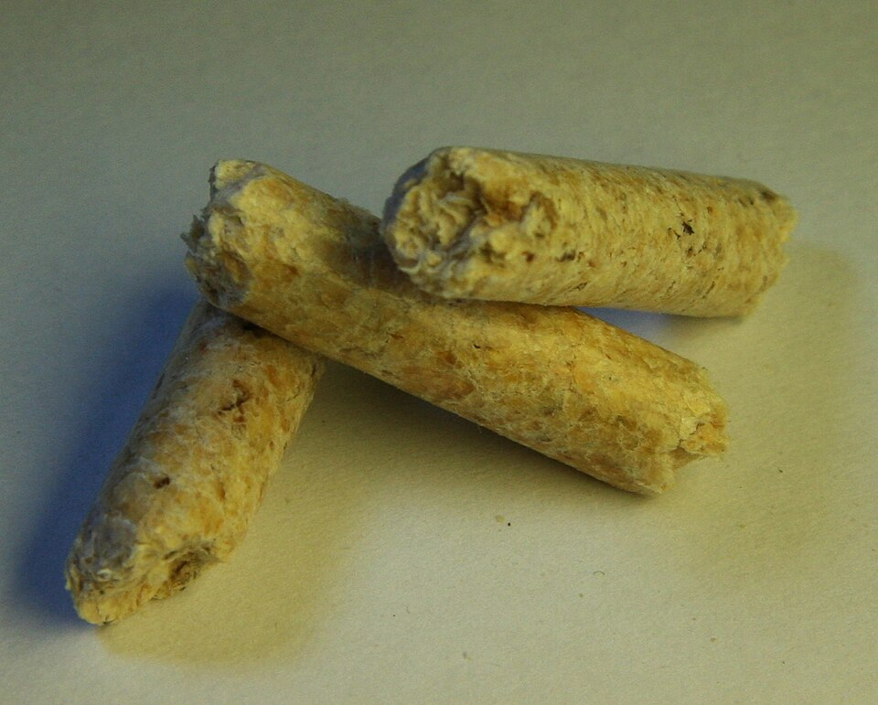
Biomass: wood pellets are a renewable fuel, but burning them still releases CO₂.
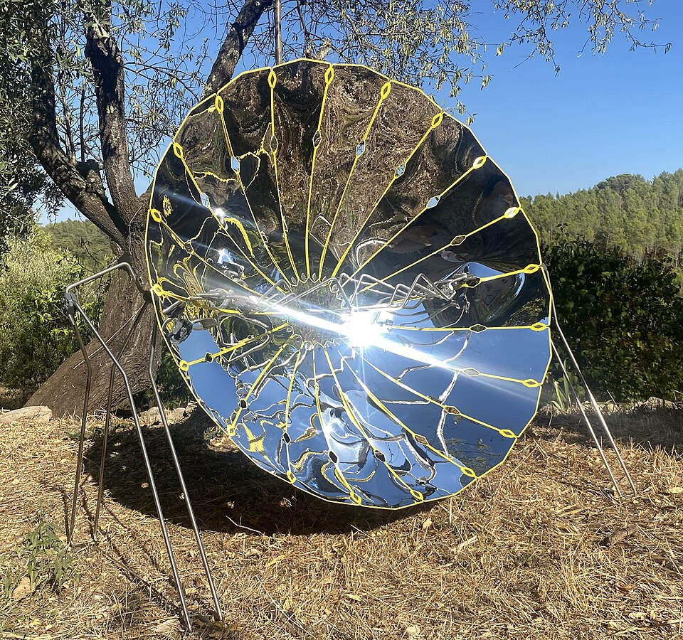
Solar cooker: a renewable way to cook food.
Real photos: tap the part
Match the source to its disadvantage
Best source for the place
Not all places have access to every type: windy places suit wind, sunny places suit solar, places near rivers suit hydroelectric.
Does the weather affect it?
Renewable, non-renewable or both?
Why aren't renewables used everywhere? The right location is needed, some equipment is expensive, and many depend on weather. Governments are now investing more to help. Try matching sites to sources in the Site Planner.
Build a full-mark answer
Long-answer builder
“Your country plans to replace all fossil fuel power plants with renewables. What factors must the government consider? Justify your answer with examples.”
Tap every statement you would put in a full-mark answer, then check.
Lab
Live Labs
Four hands-on labs. Everything moves, and every lab works with the keyboard.
Lab 1 · Lesson 7
Body Energy Lab
Eat, then move. Watch chemical energy turn into movement and heat, and see what happens to the extra.
Resting
Chemical store0
Movement (kinetic)0
Heat (thermal)0
Stored as fat0
Eat chocolate and sprint: it releases energy fastest. Energy in always equals movement + heat + stored.
Lab 2 · Lesson 8
Power Station Lab
Follow the energy from the source to the plug. Which sources burn something, and which do not?
Coal power station
Electricity0
CO₂ released0
Pick a step
Tap a step in the chain below the picture, or choose a different source.
Lab 3 · Lesson 9
Site Planner
Choose the best renewable source for each place, then test it over 24 hours.
Pick a place
Tap a place on the left, then choose the source you think suits it best.
Lab 4 · Lesson 8
Fossil Fuel Time Machine
Bury ancient life for millions of years, then burn it in seconds.
Year 0
Pressure and heat
Energy stored
CO₂ released0
What is it now?
Drag the time slider or press Fast forward.
Play
Bonus Game: Keep the Lights On
Run a small country's power grid for one day. Match supply to demand and keep the CO₂ low. About two minutes, no lives.
Each hour of the day the country needs a different amount of electricity. Switch your power sources on and off (the Sun and wind change by the hour) so you supply just enough. Fossil fuels are dependable but dirty, while renewables are clean but depend on the weather. This bonus round is optional and does not count towards any mark.